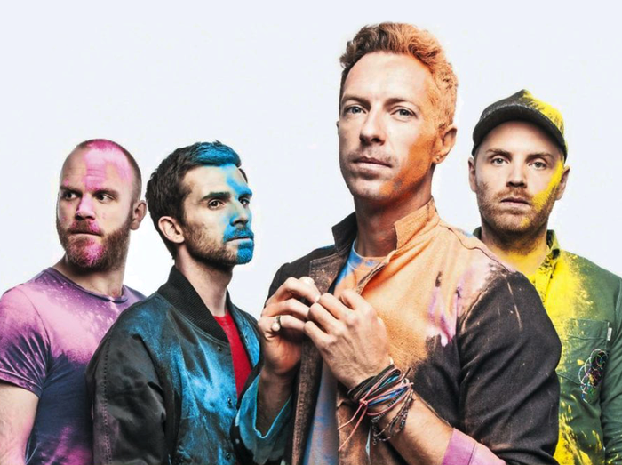

Chris Martin
出生於英格蘭德文郡，酷玩樂團（Coldplay）的主唱、吉他手與鋼琴手。他的音域介於中音和高音之間，並且經常使用假聲（falsetto）。大學就讀位於倫敦大學學院（UCL）並且取得希臘文與拉丁文雙主修研究的一級榮譽學位。
Jonny Buckland
出生於倫敦伊斯靈頓，是威爾士音樂家和多樂器演奏家。他是另類搖滾樂隊Coldplay的首席吉他手和聯合創始人。大學就讀倫敦大學學院（UCL）學習天文學。
Guy Berryman
生於蘇格蘭柯卡爾迪，是英國另類搖滾樂團酷玩樂團的貝斯手。大學就讀倫敦大學學院（UCL）取得了機械工程學位。加入Coldplay後不久，他退出了工程課程，轉而就讀於Bartlett（UCL建築學院）的七年制建築課程。一年後，他退出了建築專業，專注於在Coldplay上演
Will Champion